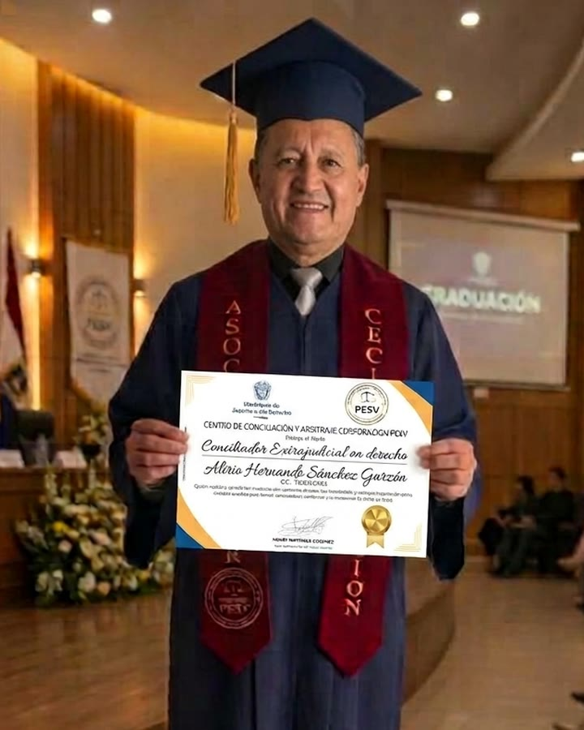
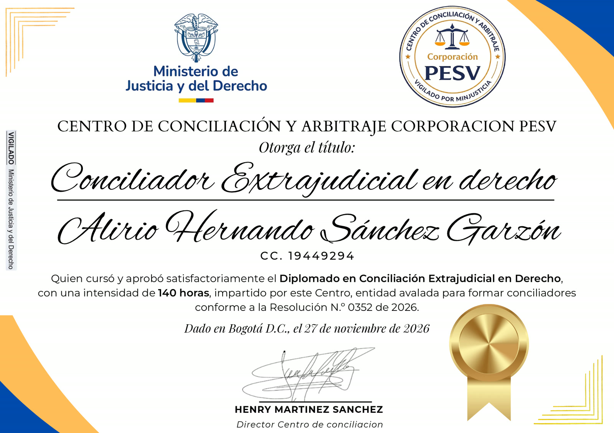

Diálogo
Escuchar a cada parte y facilitar una comunicación respetuosa y constructiva.
Centro de Conciliación y Arbitraje
presenta
Detrás de cada acuerdo hay alguien que eligió
escuchar, mediar
y construir paz.
140 horas de formación
Hoy culmina un camino de esfuerzo y vocación de servicio,
y comienza una nueva etapa al servicio de la justicia.
Con honor y distinción,
se otorga el título de
Extrajudicial en Derecho a…

¡Felicitaciones!
del Diplomado en
Conciliación Extrajudicial en Derecho
Acto de investidura
El honor se viste con orgullo
Hoy no termina un camino: comienza la misión de construir paz.
Centro de Conciliación y Arbitraje
Corporación PESV
Bogotá ·
Centro de Conciliación y Arbitraje
Ceremonia de Grado
Diplomado en Conciliación Extrajudicial en Derecho
🔊 Sube el volumenCentro de Conciliación y Arbitraje · Corporación PESV
Por culminar con éxito el Diplomado en Conciliación Extrajudicial en Derecho. Tu formación es un aporte valioso a la solución pacífica de los conflictos.
Otorgado por el Centro de Conciliación y Arbitraje Corporación PESV.

Expedido por el Centro de Conciliación y Arbitraje Corporación PESV
Descarga la presentación, el diploma y la foto para conservarlos o compartirlos.
Fundamentos jurídicos de los mecanismos alternativos de solución de conflictos.
Herramientas de comunicación, negociación y manejo de audiencias.
Casos reales y simulaciones que forjaron criterio y experiencia.
Hoy, para servir como extrajudicial en derecho.
Escuchar a cada parte y facilitar una comunicación respetuosa y constructiva.
Actuar con neutralidad, garantizando igualdad de condiciones para todos.
Proteger lo compartido y generar la confianza necesaria para llegar a acuerdos.
Transformar los conflictos en oportunidades de entendimiento y convivencia.
Desalienta los litigios. Persuade a tus vecinos a llegar a un acuerdo siempre que puedas. Como pacificador, el abogado tiene una oportunidad superior de ser una buena persona.Abraham Lincoln